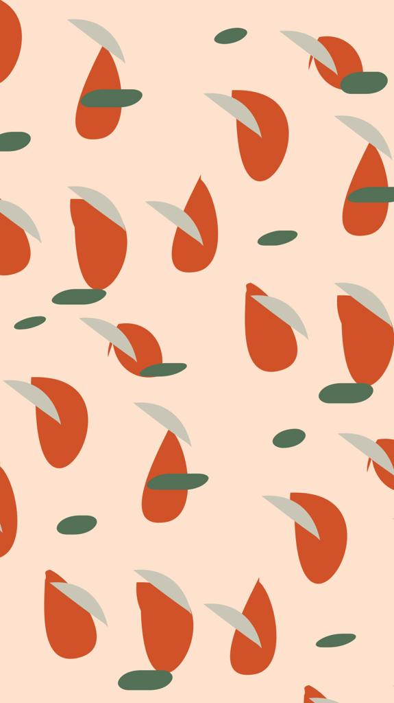

Procesos de alimentación
En los procesos de alimentaci√≥n ü•ë se agenda una sesi√≥n y en base al motivo de consulta, constituci√≥n f√≠sica y la historia cl√≠nica se arma un plan alimenticio desde la mirada de la Medicina Tradicional China. Adem√°s se usan, en caso de ser necesarios, suplementos dietarios y fitoterapia (terap√©utica a base de las propiedades de las plantas medicinales). Tras la sesi√≥n se agenda un turno control para dentro de un mes o dos meses seg√∫n la necesidad.

Sesiones de acupuntura
En las sesiones de acupuntura ✨ se pueden abordar temas digestivos, respiratorios, menstruales, tendinomusculares, psíquico emocionales, etc. Además se usan técnicas complementarias de la Medicina Tradicional China como auriculoterapia, moxibustión, ventosas, craneopuntura, dietoterapia, si fuera necesaria. En un principio se agendan 3 sesiones (1 encuentro cada 15 días, a excepción de los casos por dolor agudo o fertilidad en cuyo caso la frecuencia es semanal, durante 3 semanas seguidas). En función a la mejoría se van espaciando la frecuencia de las sesiones según la necesidad individual de cada caso a quincenal o mensual.